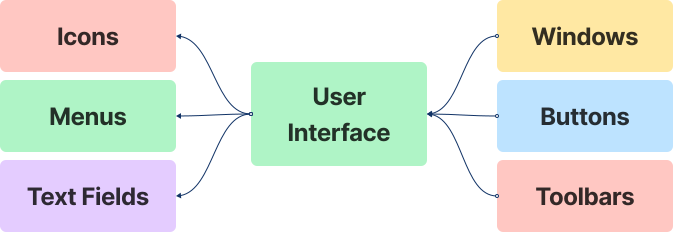
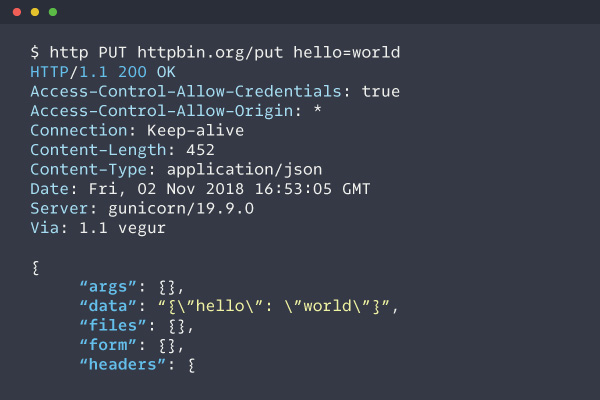
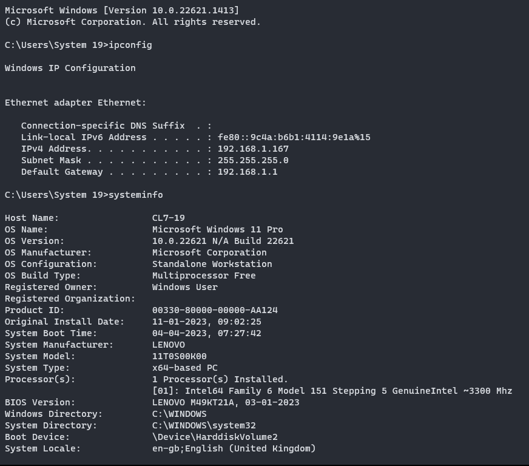

| GUI | CUI |
|---|---|
| User Friendly | The user has to learn a lot of commands to basic tasks, so its not user friendly |
| Interaction with keyboard and mouse | Only Text based interaction with a keyboard |
| Icons and toolbars help make navigation easier | No assistance for navigation |
| Intuitive, doesn't require complex commands to do tasks | Requires remembering complex commands |
| Immediate feedback after an event | No feedback unless asked |
| Good for people who are new to computers | Really powerful in the hands of programmers |


- Windows: A window is a rectangular area on the computer screen that displays information or allows the user to interact with the system. Windows can be moved, resized, minimized, and closed.
- Icons: Icons are small graphical representations of files, folders, programs, or other objects that are displayed on the screen. Icons provide a quick and easy way for users to access frequently used items. Menus: Menus are lists of options that are displayed when a user clicks on a menu bar or right-clicks on an object. Menus allow users to perform tasks or access information in an organized and hierarchical manner.
- Buttons: Buttons are graphical elements that the user can click on to perform an action. Buttons can be used for tasks such as submitting a form, starting a program, or closing a window.
- Text fields: Text fields allow users to input text or numbers into a program or form. Text fields can be used for tasks such as entering a search term or filling out a contact form. Dialog boxes: Dialog boxes are windows that are displayed to the user to provide additional information or to request input. Dialog boxes can be used for tasks such as confirming an action or changing program settings.
- Toolbars: Toolbars are graphical elements that provide quick access to frequently used commands or tools. Toolbars can be customized to include only the most commonly used tools.